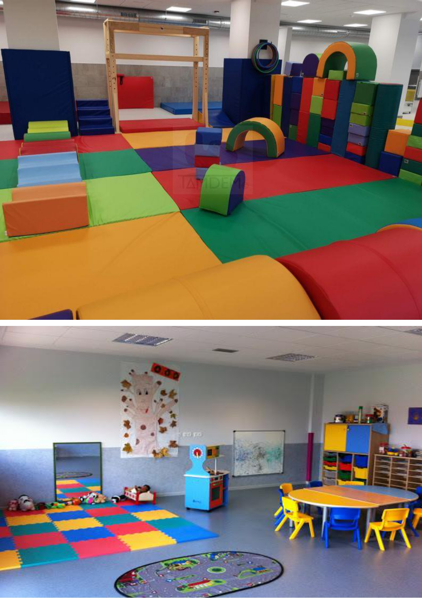

Escuela infantil en madrid con espacios acogedores y remodelados pensando en la seguridad y la estimulación de los pequeños. Nuestras instalaciones además de ser acogedoras son luminosas con luz natural y con calefacción, aire acondicionado, puertas con seguridad para sus dedos, mobiliario sin bordes ni ángulos, enchufes protegidos, cristales y espejos de seguridad
Aulas de:
Otras instalaciones

Nuestra Escuela Infantil “Semper Fidelis” cuenta con modernas, amplias y equipadas instalaciones. El entorno escolar está diseñado atendiendo a la seguridad de los alumnos.
Contamos con seis espaciosas aulas, dos líneas por año con una media de 20 alumnos por clase. Todas ellas con iluminación y ventilación natural. Cada grupo de edad cuenta con un aula personalizada donde disponen de numerosos materiales destinados a su educación y desarrollo personal. Disponemos de una amplia sala de trabajo psicomotriz que cuenta con todos los materiales necesarios para realizar todo tipo de actividades para el desarrollo motor de los niños. El patio está compuesto por una pista de deporte, un arenero, un huerto ecológico y un jardín. De esta forma, los alumnos podrán aprender en diferentes ambientes.
Disponemos de una espaciosa cocina equipada con todos los electrodomésticos necesarios para preparar tanto los desayunos como las comidas indicadas en el menú, elaborado por un especialista en dietética y educación infantil, adaptándola a las posibles intolerancias o alergias alimentarias. El comedor es muy amplio y cercano a la cocina, en el que comerán tanto los alumnos como los profesores pero en distintas horas.